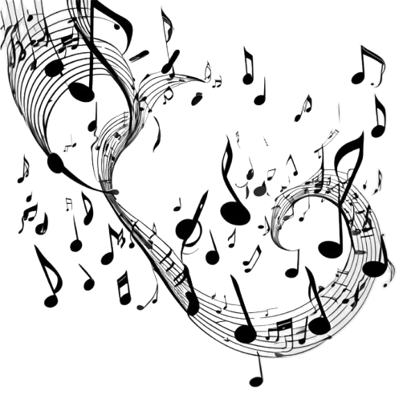

Mergulhe no universo das letras e descubra os significados por trás das suas músicas favoritas. Explore análises profundas, curiosidades e o contexto histórico de cada canção.
No Camus, você encontra análises profundas, curiosidades e o contexto histórico de cada canção.
Mas não para por aí! Você também pode criar seus próprios artigos e compartilhar suas ideias com a comunidade.
Junte-se a nós e ajude a construir um espaço onde a música é celebrada, debatida e compreendida de forma mais profunda.